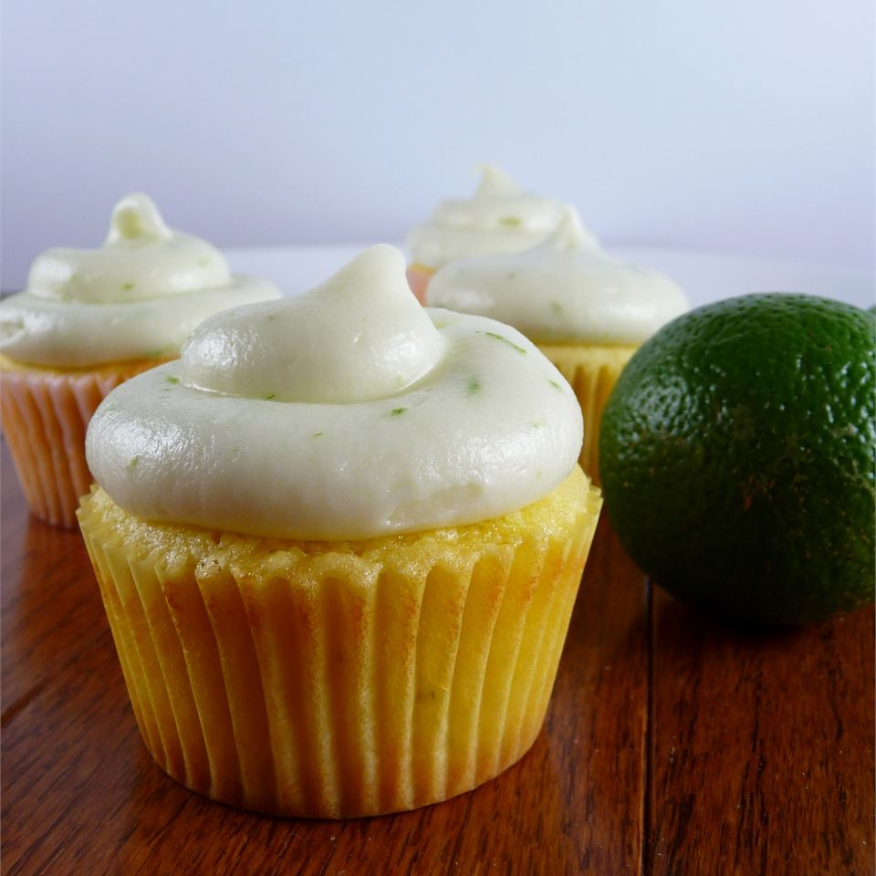

Lemon Lime Cupcakes

Ingredients
- 1½ cups butter
- 3 cups white sugar
- 5 eggs
- 2 tablespoons lemon extract
- 3 cups all-purpose flour
- ¾ cup lemon-lime soda
Steps
- Preheat oven to 350 degrees F (175 degrees C). Grease two 12 cup muffin pans and line with paper baking cups.
- Beat butter and sugar in a large bowl using an electric mixer until light and fluffy, about 15 minutes. Mix in the eggs one at a time, mixing each until well blended. Stir in the lemon extract. Stir in the flour, alternating with the lemon-lime soda, just until the batter is smooth. Spoon the batter into the prepared cups, dividing evenly.
- Bake in the preheated oven until the tops spring back when lightly pressed, 20 to 25 minutes. Cool in the pan set over a wire rack. When cool, arrange the cupcakes on a serving platter.
Return to top
Return to main page